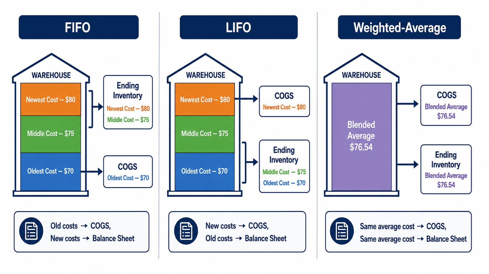
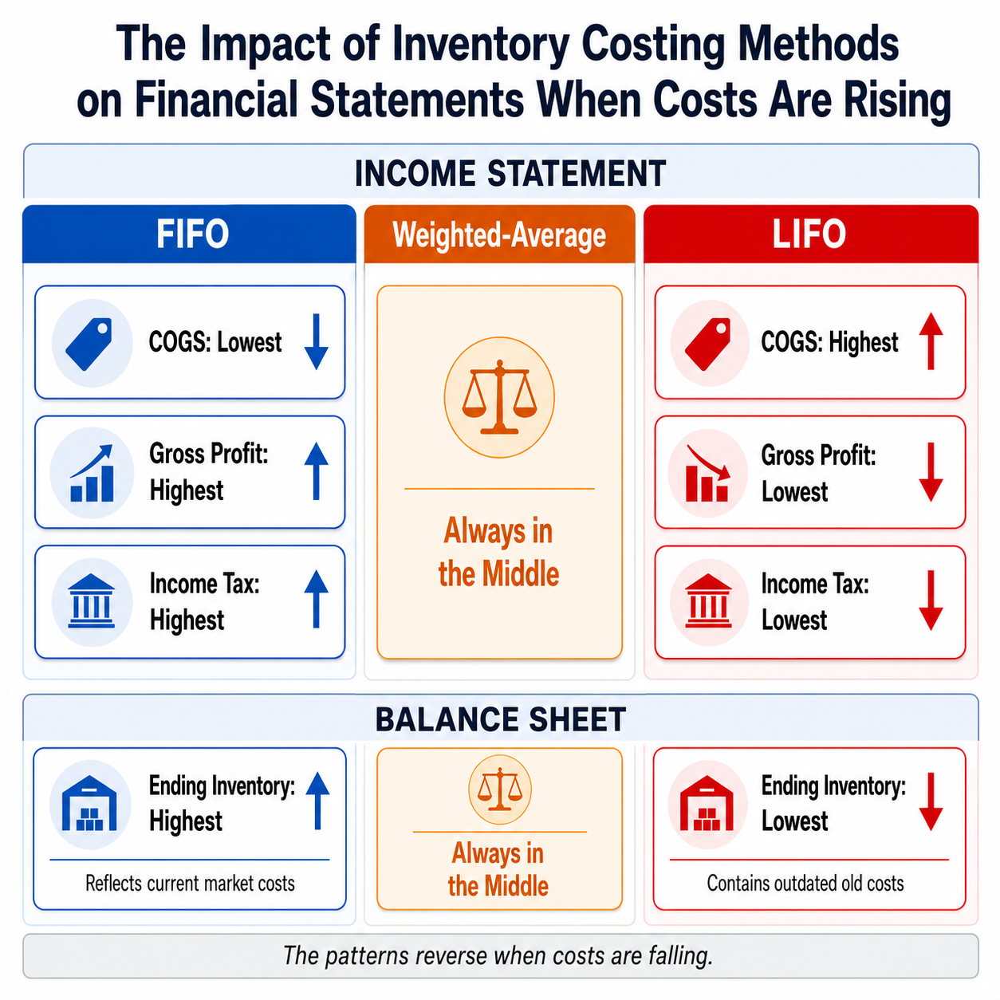
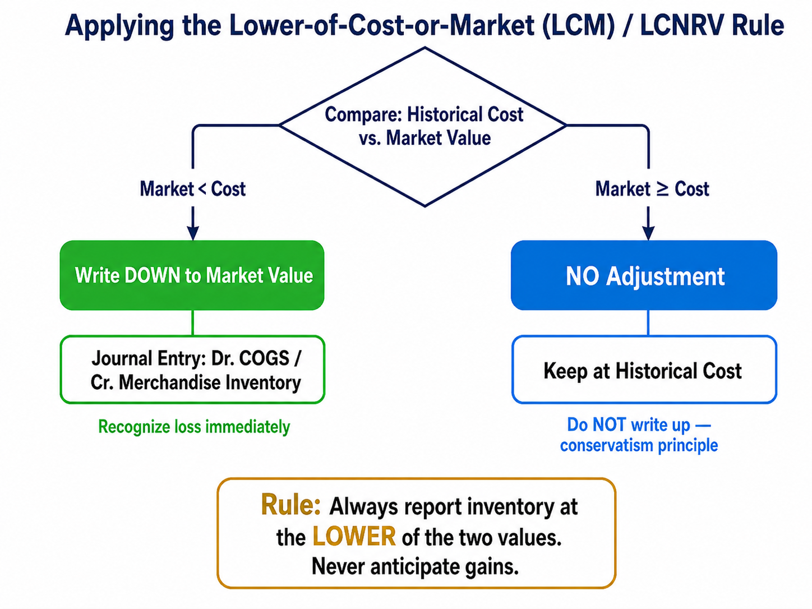
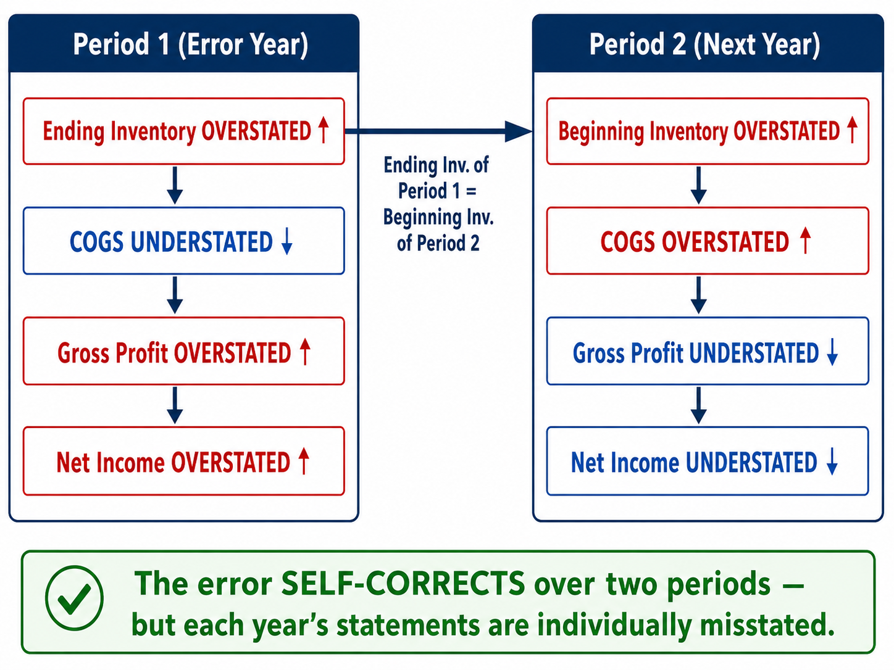

Costing Methods, Valuation, and Analysis
Each link opens the lecture video at that topic. Timestamps are approximate — a topic may begin a few seconds before or after the mark, so step back a little if you land mid-sentence.
In Chapter 5, we learned the basic mechanics of purchasing and selling merchandise inventory. When a merchandising company buys goods, it debits Merchandise Inventory; when it sells goods, it records two entries—one for revenue and one for the cost. The journal entries themselves are straightforward:
When a company purchases a single unit at one price and sells it, determining Cost of Goods Sold (COGS) is simple—you just use the price you paid. Even when multiple units are purchased at the same price, the calculation remains trivial.
In reality, unit costs rarely stay the same. Prices typically increase over time due to inflation. Imagine a merchandiser’s warehouse that contains three identical units purchased at different times and at different costs:
Warehouse Floor
If you sell one unit, what is your Cost of Goods Sold? Should it be $70, $75, or $80? The three units are physically identical—you cannot tell them apart once they are on the shelf.
For companies dealing with a very small number of unique, high-value items—like cars, fine jewelry, or real estate—it is possible to physically track exactly which item was sold. This is called specific identification. But for most merchandisers dealing with hundreds or thousands of identical units, physically tracking each unit is impractical.
Suppose you purchased 100 units at $70, 250 units at $75, and 300 units at $80. You now have 650 identical units and sell 400 of them. Your sales revenue is easy to calculate (400 × $100 = $40,000), but which costs do you assign to those 400 units? You cannot physically identify which specific units left the warehouse. This is the fundamental problem that cost flow assumptions solve.
Before examining specific costing methods, it is important to understand four accounting principles that govern how companies account for and report merchandise inventory.
A business should use the same accounting methods and procedures from period to period. Once a company selects an inventory costing method (FIFO, LIFO, or weighted-average), it must continue using that method consistently. A company cannot switch from LIFO to FIFO simply to boost reported earnings. While changes are technically permitted, they occur very infrequently and require specific justification disclosed in the notes to the financial statements.
Financial statements should report enough information for outsiders to make knowledgeable decisions. Beyond reporting numerical amounts for Cost of Goods Sold and Ending Inventory, a company must clearly state in the notes to the financial statements which inventory costing method it used to arrive at those figures.
A company must perform strictly proper accounting only for items that are significant—or material—to the business’s overall financial situation. Would you apply a complex perpetual inventory system to track ten pencils that cost less than a dollar each? Of course not. Low-cost office supplies are simply expensed as supplies expense rather than tracked through a formal inventory system.
When two or more possible values exist, a business should report the least favorable figures in the financial statements. The guiding rule is: anticipate no gains, but provide for all probable losses. Record an asset at the lowest reasonable amount and a liability at the highest reasonable amount. This principle directly underlies the lower-of-cost-or-net realizable value rule discussed later in this chapter.
Good inventory controls ensure that inventory purchases and sales are properly authorized and accounted for by the accounting system. Effective controls include:
Because it is nearly impossible to track the exact cost of each individual item sold in large quantities, accountants use logical approximations called cost flow assumptions. GAAP permits four basic inventory costing methods:

| Method | Assumption | Typical Use |
|---|---|---|
| Specific Identification | Each unit is tracked individually | Unique, high-value items (cars, jewelry, real estate) |
| FIFO | First units purchased are the first sold | Perishable goods, most common method |
| LIFO | Last units purchased are the first sold | Tax advantages in inflationary periods |
| Weighted-Average | All units carry a blended average cost | Commodity-type goods, large homogeneous batches |
Cost Flow Assumption: A logical method used to determine which inventory costs are assigned to Cost of Goods Sold and which remain in Ending Inventory when individual units cannot be specifically identified. FIFO, LIFO, and weighted-average are cost flow assumptions; specific identification is not an assumption because the actual unit cost is known.
It is critical to understand that cost flow assumptions describe the flow of costs, not the physical flow of goods. Under LIFO, you are not literally selling the newest goods first—you are assuming that the newest costs are transferred to COGS first for accounting purposes. The physical movement of goods in the warehouse is irrelevant to the cost flow assumption chosen.
To build intuition before working with perpetual inventory records, let us first examine a simplified example. A company has 650 units available for sale, purchased in three batches at rising costs. Out of these 650 units, 400 are sold at $100 each.
| Purchase Date | Units | Unit Cost | Total Cost |
|---|---|---|---|
| January 3 | 100 | $70 | $7,000 |
| March 2 | 250 | $75 | $18,750 |
| April 7 | 300 | $80 | $24,000 |
| Total | 650 | $49,750 |
Under FIFO (First-In, First-Out), the oldest goods are assumed to be sold first. We “peel off” costs starting from the top of the stack:
| Layer | Units Sold | Unit Cost | Total |
|---|---|---|---|
| Jan 3 (oldest) | 100 | $70 | $7,000 |
| Mar 2 | 250 | $75 | $18,750 |
| Apr 7 (newest) | 50 | $80 | $4,000 |
| FIFO COGS | 400 | $29,750 |
Since the oldest goods are sold first, the remaining units are the newest. All 250 unsold units come from the April 7 batch at $80 each:
\[ \text{Ending Inventory (FIFO)} = 250 \times \$80 = \$20{,}000 \]
\[ \text{Goods Available for Sale} - \text{COGS} = \text{Ending Inventory} \]
\[ \$49{,}750 - \$29{,}750 = \$20{,}000 \;\checkmark \]
Under LIFO (Last-In, First-Out), the newest goods are assumed to be sold first. Using the same 650 units and 400 sold:
| Layer | Units Sold | Unit Cost | Total |
|---|---|---|---|
| Apr 7 (newest) | 300 | $80 | $24,000 |
| Mar 2 | 100 | $75 | $7,500 |
| LIFO COGS | 400 | $31,500 |
Since the newest goods were sold first, the remaining units are the oldest:
| Layer | Units Remaining | Unit Cost | Total |
|---|---|---|---|
| Jan 3 (oldest) | 100 | $70 | $7,000 |
| Mar 2 | 150 | $75 | $11,250 |
| LIFO Ending Inventory | 250 | $18,250 |
\[ \$49{,}750 - \$31{,}500 = \$18{,}250 \;\checkmark \]
Under the weighted-average method, a single blended unit cost is calculated by dividing total cost by total units:
\[ \text{Average Unit Cost} = \frac{\text{Total Cost of Goods Available for Sale}}{\text{Total Units Available for Sale}} \]
\[ = \frac{\$49{,}750}{650} \approx \$76.54 \]
This single average cost is applied to both COGS and Ending Inventory:
| Units | Unit Cost | Total | |
|---|---|---|---|
| COGS | 400 | $76.54 | $30,615 |
| Ending Inventory | 250 | $76.54 | $19,135 |
| Goods Available for Sale | 650 | $49,750 |
Why does FIFO always produce the highest gross profit when costs are rising? Because FIFO assigns the oldest, cheapest costs to COGS. A lower expense means higher profit. LIFO does the opposite—it pushes the newest, most expensive costs into COGS, producing the lowest profit. The weighted-average method always falls in between. This is a direct mathematical consequence of rising purchase prices, not a coincidence.
Before examining the three cost flow assumptions in a perpetual system, let us briefly review specific identification. This method tracks the actual cost of each individual unit. Because you know exactly which unit was sold, no assumption is necessary. It is typically used for unique, high-value items such as automobiles, jewelry, or real estate.
A tablet retailer has beginning inventory of 2 units at $350 each and purchases 4 units at $360 on August 5. On August 15, 4 units are sold. The customer selected 1 unit from the original batch ($350) and 3 units from the new batch ($360).
COGS: (1 × $350) + (3 × $360) = $350 + $1,080 = $1,430
Under specific identification, you simply look up the known cost of each specific unit that left the warehouse.
Under a perpetual system, COGS is calculated at the time of each sale, not at the end of the period. Under FIFO, the oldest available costs are assigned to each sale as it occurs. Let us walk through a complete example using the following data:
| Date | Transaction | Units | Unit Cost |
|---|---|---|---|
| Aug 1 | Beginning Inventory | 2 | $350 |
| Aug 5 | Purchase | 4 | $360 |
| Aug 15 | Sale | 4 | — |
| Aug 26 | Purchase | 12 | $380 |
| Aug 31 | Sale | 10 | — |
| Date | Purchases | Cost of Goods Sold | Inventory on Hand | ||||||
|---|---|---|---|---|---|---|---|---|---|
| Qty | Unit Cost | Total | Qty | Unit Cost | Total | Qty | Unit Cost | Total | |
| Aug 1 | 2 | $350 | $700 | ||||||
| Aug 5 | 4 | $360 | $1,440 | 2 | $350 | $700 | |||
| 4 | $360 | $1,440 | |||||||
| Aug 15 | 2 | $350 | $700 | ||||||
| 2 | $360 | $720 | 2 | $360 | $720 | ||||
| Aug 26 | 12 | $380 | $4,560 | 2 | $360 | $720 | |||
| 12 | $380 | $4,560 | |||||||
| Aug 31 | 2 | $360 | $720 | ||||||
| 8 | $380 | $3,040 | 4 | $380 | $1,520 | ||||
| Totals | $6,000 | $5,180 | 4 | $1,520 | |||||
August 15 Sale (4 units): Under FIFO, pull from the oldest layer first. Take all 2 units from beginning inventory at $350, then 2 units from the August 5 purchase at $360. COGS = (2 × $350) + (2 × $360) = $1,420. Remaining on hand: 2 units at $360.
August 26 Purchase (12 units at $380): No COGS calculation—simply add a new inventory layer. On hand: 2 @ $360 + 12 @ $380.
August 31 Sale (10 units): Under FIFO, sell the oldest layer first. Take 2 units at $360 (depleting that layer), then 8 units at $380. COGS = (2 × $360) + (8 × $380) = $3,760. Remaining: 4 units at $380 = $1,520.
\[ \underbrace{\$700}_{\text{Beg. Inv.}} + \underbrace{\$6{,}000}_{\text{Purchases}} = \$6{,}700 \; (\text{Goods Available for Sale}) \]
\[ \$6{,}700 = \underbrace{\$5{,}180}_{\text{COGS}} + \underbrace{\$1{,}520}_{\text{Ending Inv.}} \;\checkmark \]
Under LIFO in a perpetual system, the newest available costs are assigned to COGS at the time of each sale. Using the same data:
| Date | Purchases | Cost of Goods Sold | Inventory on Hand | ||||||
|---|---|---|---|---|---|---|---|---|---|
| Qty | Unit Cost | Total | Qty | Unit Cost | Total | Qty | Unit Cost | Total | |
| Aug 1 | 2 | $350 | $700 | ||||||
| Aug 5 | 4 | $360 | $1,440 | 2 | $350 | $700 | |||
| 4 | $360 | $1,440 | |||||||
| Aug 15 | 4 | $360 | $1,440 | 2 | $350 | $700 | |||
| Aug 26 | 12 | $380 | $4,560 | 2 | $350 | $700 | |||
| 12 | $380 | $4,560 | |||||||
| Aug 31 | 10 | $380 | $3,800 | 2 | $350 | $700 | |||
| 2 | $380 | $760 | |||||||
| Totals | $6,000 | $5,240 | 4 | $1,460 | |||||
August 15 Sale (4 units): Under LIFO, pull from the newest layer. The newest goods are the 4 units purchased August 5 at $360. COGS = 4 × $360 = $1,440. Remaining: the original 2 units at $350.
August 31 Sale (10 units): The newest layer is the August 26 purchase (12 @ $380). Take 10 units from this batch. COGS = 10 × $380 = $3,800. Remaining: 2 @ $350 (beginning) + 2 @ $380 (Aug 26 remainder) = $1,460.
\[ \$6{,}700 = \underbrace{\$5{,}240}_{\text{COGS}} + \underbrace{\$1{,}460}_{\text{Ending Inv.}} \;\checkmark \]
Notice that the journal entry format is identical under FIFO and LIFO—the only difference is the dollar amounts. The debit to Cost of Goods Sold and credit to Merchandise Inventory change because the costing method determines which cost layers are assumed to be sold. Practice building these perpetual inventory schedules until you are comfortable calculating COGS and Ending Inventory under both methods.
Under a perpetual system, the weighted-average method is called the moving weighted-average method because the average unit cost is recalculated every time a new purchase is made. The average does not change when a sale occurs—only when new inventory is purchased.
\[ \text{New Average Unit Cost} = \frac{\text{Total Cost of Inventory on Hand}}{\text{Total Units on Hand}} \]
| Date | Purchases | Cost of Goods Sold | Inventory on Hand | ||||||
|---|---|---|---|---|---|---|---|---|---|
| Qty | Unit Cost | Total | Qty | Unit Cost | Total | Qty | Unit Cost | Total | |
| Aug 1 | 2 | $350.00 | $700 | ||||||
| Aug 5 | 4 | $360 | $1,440 | 6 | $356.67 | $2,140 | |||
| Aug 15 | 4 | $356.67 | $1,427 | 2 | $356.67 | $713 | |||
| Aug 26 | 12 | $380 | $4,560 | 14 | $376.64 | $5,273 | |||
| Aug 31 | 10 | $376.64 | $3,766 | 4 | $376.64 | $1,507 | |||
| Totals | $6,000 | $5,193 | 4 | $1,507 | |||||
After Aug 5 Purchase: Total cost = $700 + $1,440 = $2,140. Total units = 2 + 4 = 6. New average = $2,140 ÷ 6 = $356.67.
Aug 15 Sale (4 units): Use the current average: 4 × $356.67 = $1,427. Remaining: 2 units × $356.67 = $713.
After Aug 26 Purchase: Total cost = $713 + $4,560 = $5,273. Total units = 2 + 12 = 14. New average = $5,273 ÷ 14 = $376.64.
Aug 31 Sale (10 units): 10 × $376.64 = $3,766. Remaining: 4 × $376.64 = $1,507.
The choice of inventory costing method directly impacts both the Income Statement and the Balance Sheet. Assuming inventory costs are rising (the most common business environment due to inflation), the following patterns emerge:

| FIFO | Weighted-Avg | LIFO | |
|---|---|---|---|
| COGS | Lowest | Middle | Highest |
| Gross Profit | Highest | Middle | Lowest |
| Net Income | Highest | Middle | Lowest |
| Income Tax | Highest | Middle | Lowest |
Companies may prefer FIFO to show higher profitability to investors and lenders. Alternatively, they may prefer LIFO because lower reported net income results in lower income tax payments—a real cash savings.
| FIFO | Weighted-Avg | LIFO | |
|---|---|---|---|
| Ending Inventory | Highest | Middle | Lowest |
| Reflects Current Costs? | Yes — newest costs remain | Partially | No — oldest costs remain |
Under FIFO, the inventory remaining on the balance sheet consists of the newest, highest-cost purchases—so it closely reflects current replacement costs. Under LIFO, the oldest, cheapest costs are left in ending inventory, which can be significantly outdated compared to current market prices.
The patterns above are not coincidences—they are direct mathematical consequences of rising costs. Under FIFO, old (cheap) costs go to COGS and new (expensive) costs stay on the balance sheet. Under LIFO, the reverse occurs. If prices were falling, these patterns would flip entirely. The weighted-average method always lands in the middle because it blends all costs together.
After calculating ending inventory using a cost flow assumption, a company must test whether the inventory’s market value has dropped below its recorded cost. The conservatism principle prevents a company from overstating its assets.
Lower-of-Cost-or-Net Realizable Value (LCNRV): Under current GAAP (ASU 2015-11), inventory measured using FIFO or weighted-average must be reported at the lower of its historical cost or its net realizable value (NRV = estimated selling price minus estimated costs to complete and sell). For inventory measured using LIFO, the traditional lower-of-cost-or-market (LCM) rule with replacement cost still applies. In either case, if the market value falls below cost, the inventory must be written down.

Suppose your FIFO Ending Inventory is $20,000 (250 units at $80 each). Due to market conditions, the replacement price has dropped to $40 per unit, making the market value only $10,000.
You must choose the lower amount: $10,000. The inventory must be written down by $10,000.
Now suppose the replacement cost rises to $85 per unit, making the market value $21,250. Comparing:
No adjustment is made. You do not write up the value of inventory. Doing so would violate the conservatism principle by anticipating a gain before a sale occurs. The inventory remains on the books at its historical cost of $20,000.
Smart Touch Learning paid $3,000 for inventory. By December 31, the market replacement cost has fallen to $2,200. The LCM rule requires reporting inventory at $2,200. Adjusting entry: Debit Cost of Goods Sold $800, Credit Merchandise Inventory $800. The balance sheet will now correctly show inventory at the lower market value of $2,200.
An error in counting or recording inventory does not affect just one account—it creates a ripple effect across COGS, Gross Profit, and Net Income, spanning two accounting periods.

\[ \text{Beginning Inventory} + \text{Net Purchases} = \text{Cost of Goods Available for Sale} \]
\[ \text{Cost of Goods Available for Sale} - \text{Ending Inventory} = \text{Cost of Goods Sold} \]
If the total Goods Available for Sale is correct but Ending Inventory is misstated, COGS will automatically be incorrect in the opposite direction.
| Period 1 (Error Year) | Period 2 (Next Year) | |
|---|---|---|
| Ending Inventory | Overstated ↑ | Correct |
| Beginning Inventory | Correct | Overstated ↑ |
| COGS | Understated ↓ | Overstated ↑ |
| Gross Profit | Overstated ↑ | Understated ↓ |
| Net Income | Overstated ↑ | Understated ↓ |
| Period 1 (Error Year) | Period 2 (Next Year) | |
|---|---|---|
| Ending Inventory | Understated ↓ | Correct |
| Beginning Inventory | Correct | Understated ↓ |
| COGS | Overstated ↑ | Understated ↓ |
| Gross Profit | Understated ↓ | Overstated ↑ |
| Net Income | Understated ↓ | Overstated ↑ |
An inventory error naturally self-corrects after two periods. The overstatement of net income in Period 1 is exactly offset by an understatement in Period 2 (and vice versa). However, each individual year’s financial statements will be materially misstated. This is why accurately counting and recording ending inventory through physical counts is absolutely critical.
The key to remembering these relationships is the equation: COGS and Ending Inventory move in opposite directions. If Ending Inventory is overstated, COGS is understated (because you subtracted too much from Goods Available for Sale). If COGS is understated, it is a smaller expense, so Gross Profit and Net Income are overstated.
Two key ratios help evaluate how efficiently a company manages its inventory.
\[ \text{Inventory Turnover} = \frac{\text{Cost of Goods Sold}}{\text{Average Merchandise Inventory}} \]
\[ \text{Average Merchandise Inventory} = \frac{\text{Beginning Inventory} + \text{Ending Inventory}}{2} \]
This ratio measures how rapidly a company sells its inventory. A higher turnover indicates that inventory is selling quickly and the business is operating efficiently. A low turnover suggests difficulty in selling inventory or overstocking.
If a company’s Cost of Goods Sold for the year is $100,000 and its Average Merchandise Inventory is $10,000:
\[ \text{Inventory Turnover} = \frac{\$100{,}000}{\$10{,}000} = 10 \text{ times} \]
This means the company buys and completely sells out its inventory 10 times during the year.
\[ \text{Days' Sales in Inventory} = \frac{365}{\text{Inventory Turnover}} \]
This ratio measures how many days on average it takes to sell inventory from the time it is purchased. Using our previous example:
\[ \text{Days' Sales in Inventory} = \frac{365}{10} = 36.5 \text{ days} \]
On average, it takes this company 36.5 days from purchasing inventory to selling it. A higher turnover naturally produces a lower number of days in inventory, indicating efficient asset management.
These two ratios are simply inverses of each other, measured in different units. Inventory Turnover tells you “how many times per year,” while Days’ Sales in Inventory converts that into “how many days per cycle.” Together, they give you a complete picture of how efficiently a company converts its inventory investment into sales.
From Kohl’s Corporation’s financial statements:
\[ \text{Inventory Turnover} = \frac{\text{COGS}}{\text{Average Inventory}} = 3.12 \text{ times per year} \]
\[ \text{Days' Sales in Inventory} = \frac{365}{3.12} = 117 \text{ days} \]
Kohl’s turns over its inventory about 3 times per year, meaning it takes approximately 117 days on average from purchasing merchandise to selling it. This ratio should be evaluated against industry averages—different types of retailers have very different turnover rates.
All examples so far have used the perpetual inventory system, where COGS is calculated at the time of each sale. Under the periodic system, the timing is completely different.
When a sale is made during the period, you do not record Cost of Goods Sold. You only record the sales revenue. No running inventory balance is maintained. Instead, at the end of the accounting period, you:
Using the same data: Beginning Inventory = 2 units @ $350; Purchases = 4 @ $360 and 12 @ $380. Total = 18 units, $6,700 cost. A physical count shows 4 units remaining, meaning 14 were sold.
Ending Inventory (FIFO): Under periodic FIFO, the 4 remaining units are the newest purchases: 4 × $380 = $1,520.
COGS: $6,700 − $1,520 = $5,180.
Notice this matches the perpetual FIFO result exactly. FIFO produces the same results under both perpetual and periodic systems because the oldest costs are always assigned to COGS regardless of timing.
Under periodic LIFO, the 14 units sold are assumed to be the newest: 12 @ $380 + 2 @ $360 = $4,560 + $720 = $5,280.
Ending Inventory: The 4 remaining units are the oldest: 2 @ $350 + 2 @ $360 = $700 + $720 = $1,420.
Note that periodic LIFO COGS ($5,280) differs from perpetual LIFO COGS ($5,240). Under LIFO, the timing of cost assignment matters because the “newest” cost at each sale date may differ from the “newest” cost when calculated once at period-end.
Under the periodic system, you calculate one simple average at the end of the period:
\[ \text{Average Unit Cost} = \frac{\$6{,}700}{18 \text{ units}} = \$372.22 \]
COGS: 14 × $372.22 = $5,211
Ending Inventory: 4 × $372.22 = $1,489
This differs from the perpetual moving average, which recalculates after every purchase.
| Feature | Perpetual System | Periodic System |
|---|---|---|
| When is COGS calculated? | At the time of each sale | At the end of the period |
| Running inventory balance? | Yes — continuously updated | No — only known after physical count |
| Physical count needed? | Used to verify records (shrinkage check) | Required to determine ending inventory |
| FIFO results same? | Yes — always identical | |
| LIFO / Avg results same? | No — timing of calculation causes differences | |